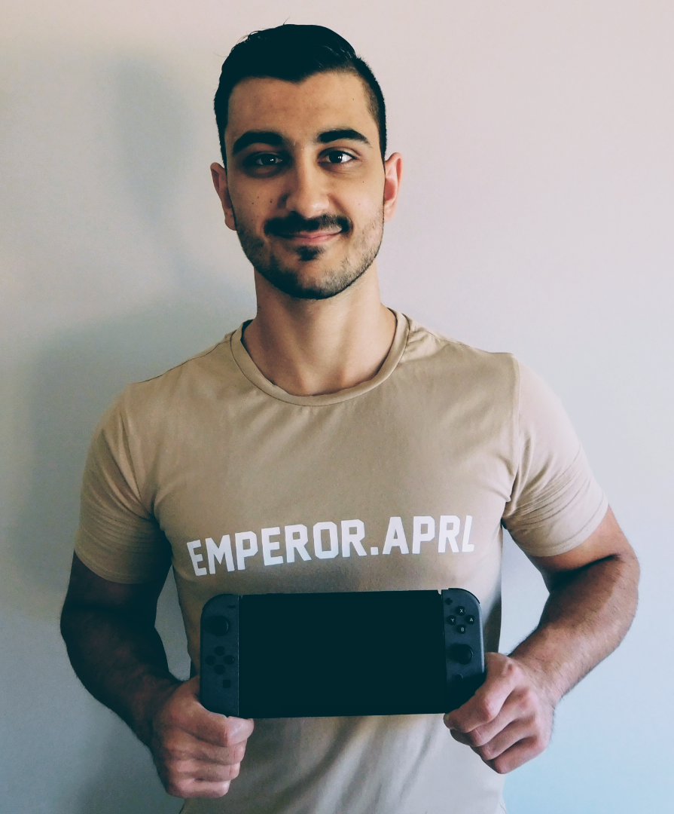
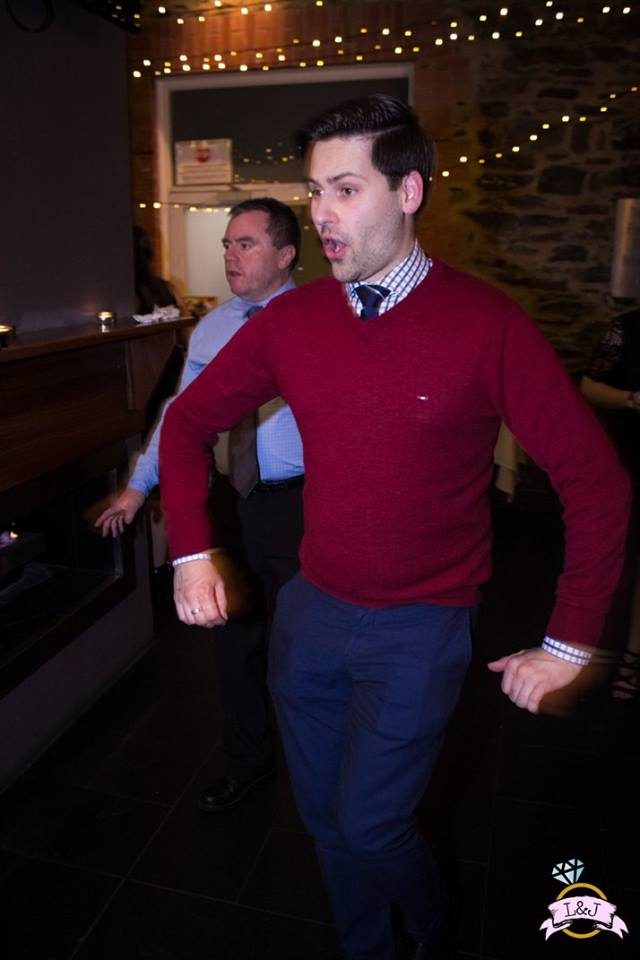

Meet The Team
Chris Kyriacou
Chris Kyriacou is an Information Technologist in the Research & Data Management Support team at the University of South Australia. As part of the team, he contributes to the design, functionality inclusion and maintenance of research systems and services. In his spare time, he enjoys Video Games, eCommerce and Fitness.
James Moyon
James Moyon is a Senior Information Technologist in the Research & Data Management Support team at the University of South Australia. He is responsible for providing technical leadership and expertise in the design, development and support of research systems and services, research data management technologies, and infrastructure. In his spare time, he enjoys music, board games and long walks on the beach.
Ryan Brown
Ryan Brown is an Information Technologist in the Research & Data Management Support team at the University of South Australia. As part of the team, he contributes to the design, functionality inclusion and maintenance of research systems and services. In his spare time, he enjoy keeping up with the trends in technology, reading and playing video games.
suburboutlook.tech, 2017.